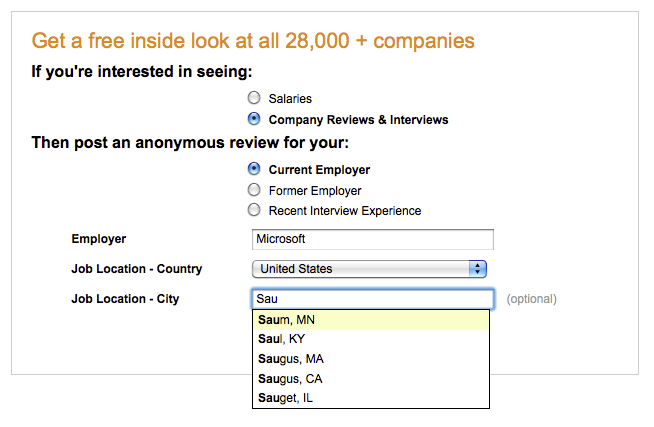

This screen page some sample auto-complete fields from the Glassdoor survey start page.
See also: jQuery Autocomplete Docs

In the above example, I'm using a fairly straightforward ajax auto-complete box with the following options set:
{
delay: 100,
minChars: 3,
matchContains: true,
matchSubset: false,
cacheLength: 15,
maxItemsToShow: 30,
selectFirst: true,
cellSeparator: '\x1f',
formatItem: function(rowData, index, rowCount) {
// my format function
},
resultsClass: "location_ac_results ac_results",
resultsId: 'GDLocAC'
};
My format function simply gets the content of the edit field and then wraps any text matching this text with a 'strong' tag. Also note that I'm giving the popup a unique ID. This ID is only added to the popup when it's shown. This was requested by our QA director to help with UI testing.
I'm also adding my own classname to the results popup via the 'resultsClass' option. This helps me to style the popup contents.
The last thing to note is that I'm using a cell separator of 0x1f, which is the ASCII Unit Separator character. This seemed the logical choice to separate data when I thought that the content could be any valid displayable character. The default cell separator is the vertical bar character ('|').
This example is a little more complex, especially the fomatter, which uses additional data returned from the ajax query. The options are as follows:
{
delay: 100,
minChars: 2,
matchContains: true,
matchSubset: false,
cacheLength: 15,
maxItemsToShow: 10,
cellSeparator: '\x1f',
onItemSelect: function(listItem) {
myOnItemSelect(listItem);
},
formatItem: function(rowData, index, rowCount) {
// my formatting function
},
width: 500,
resultsClass: "employer_ac_results ac_results",
resultsId: 'GDEmployerAC',
extraParams: {
'partialWordMode': 'true',
'loadEmployers': 'false'
}
}
In addition to the more complex formatting function, I'm also specifying an 'onItemSelect' function. This function gets the hidden employer ID from the selected list item and sets it into hidden form fields. It roughly looks like this:
function myOnItemSelect = function(selectedListItem) {
selectedListItem = $(selectedListItem);
var moreData = selectedListItem.attr('extra');
var employerId = moreData[0];
}
The last thing you may notice here is that I'm using the 'extraParams' option to pass a few parameters to the query.
Ron Lussier, Glassdoor.com –
coyote@glassdoor.com
1 Oct 2009